| 2. 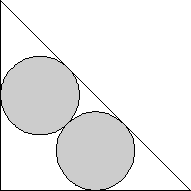 | 4. 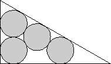 | 7. 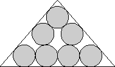 | ||
|
A = 6 + 4√2 = 11.656+ a = 2 + 2√2 b = 2 + 2√2 c = 4 + 2√2 Found by David W. Cantrell in June 2007 |
A = 9 + 6√3 = 19.392+ a = 3 + √3 b = 3 + 3√3 c = 6 + 2√3 Found by David W. Cantrell in June 2007 |
A = 31.212+ a = 7.946+ b = 7.946+ c = 10.352+ Found by David W. Cantrell in June 2007 |
| 8. 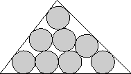 | 11. 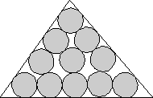 | 12. 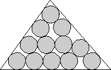 | ||
|
A = 35.936+ a = 8.038+ b = 9.018+ c = 11.270+ Found by David W. Cantrell in June 2007 |
A = 47.003+ a = 9.547+ b = 10.170+ c = 12.081+ Found by David W. Cantrell in June 2007 |
A = 51.304+ a = 9.875+ b = 10.666+ c = 12.792+ Found by David W. Cantrell in June 2007 |
| 13. 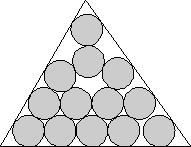 | 16. 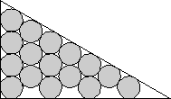 | 17. 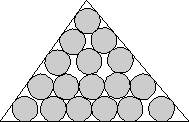 | ||
|
A = 54.894+ a = 10.632+ b = 11.333+ c = 11.922+ Found by David W. Cantrell in June 2007 |
A = 21 + 26√3 = 66.033+ a = 7 + √3 b = 3 + 7√3 c = 14 + 2√3 Found by David W. Cantrell in June 2007 |
A = 70.275+ a = 11.673+ b = 12.434+ c = 14.775+ Found by David W. Cantrell in June 2007 |
| 18. 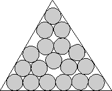 | 19. 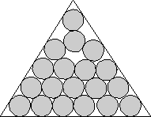 | 22. 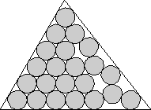 | ||
|
A = 74.803+ a = 12.723+ b = 13.171+ c = 13.577+ Found by David W. Cantrell in June 2007 |
A = 77.346+ a = 12.892+ b = 13.169+ c = 14.130+ Found by David W. Cantrell in June 2007 |
A = 89.127+ a = 13.211+ b = 14.540+ c = 15.579+ Found by David W. Cantrell in June 2007 |